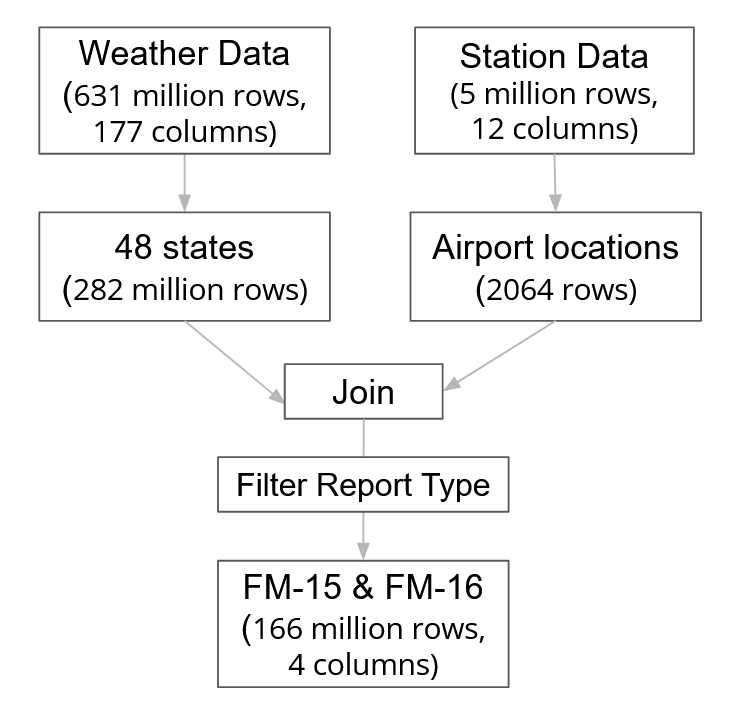
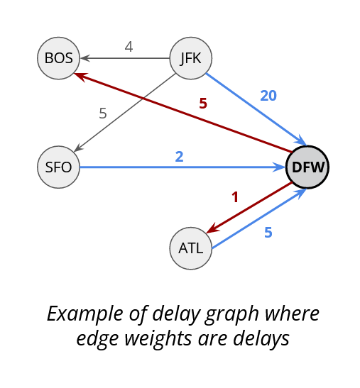
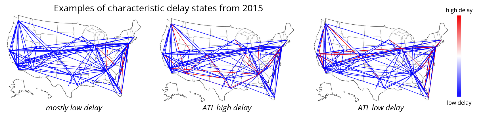
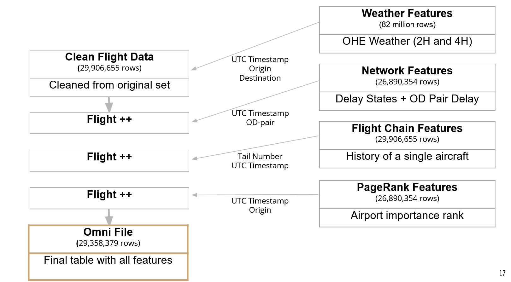
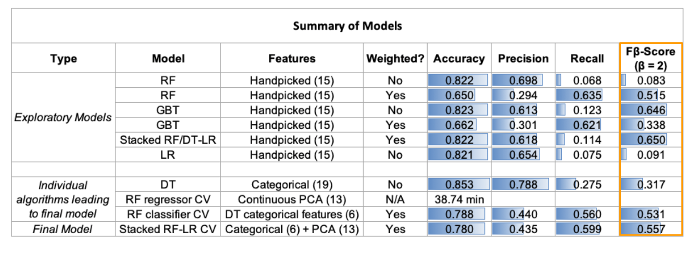

Predicting Flight Delays
The Purpose
Our goal is to predict if a flight will be delayed more than 15 mins two hours before it departs (binary).
The Quest
The weather data comes from the National Ocianic and Atmospheric Administration (NOAA). The weather and station data tables were cleaned and joined to create a weather dataset as shown below:
{kind=link}
We generated features for the weather dataset by one hot encoding the weather conditions (thunderstrom, ice, snow, and fog) at 2 hours and 4 hours prior. Also, we only retained the worst-reported weather condition in each hourly window.
The flight data comes from the US Department of Transportation and spans from 2015-2019. The flight data has 371 origin ariports and 369 destination airports with 19 different airlines and 7,894 unique tail numbers. The process of cleaning up the data, and generating featuers for the flight dataset is below:
{kind=link}
We took this raw data and cleaned the data based on the following principles:
- Drop duplicates and nulls on target variable.
- Drop duplicates on keys that should be unique (Tail Number + Departure Date and Time).
- Drop duplicate flights for multiple carriers.
- Drop redundant and retroactive columns that are not usable for inference.
- Convert departure/arrival times to UTC.
- Keep only continental-48 USA flights.
From the clean-up and EDA of the flight dataset, there are four main insights:
- 82% of flights are not delayed.
- Some routes have an outsized effect on delays.
- Some airlines experience proportionally higher delays.
- Carrier and late aircraft are most strongly correlated with delays.
We engineered five new features from the flight dataset:
- O-D Pairs: We created origin destination pairs
- PageRank: We used the page rank algorithm to rank the importance of airports for the network.
- Network Features:
- Delayed State Features:
- Delay Graph: We created a graph with airports as nodes and edges as median delays per hour between those pairs. We used the edges to also the outbound and inbound mean delay too. We got these figures for each flight 2 and 4 hours before departure. 
- Delay States: This is a snapshot fo delays in the overall network. We got the median delay per OD pair each hour and we created one vector per hour. Then we ran K means over all vectors to form cluster. Each centroid per cluster was a delay state. Our features were the delay state of the network 2 and 4 hours before the departure times. 
- Flight Chain Features: We created features from single aircraft journeys by getting the 5 previous flights, their delays if they happened 2 hours before booked departure, and the mean of those delays.
{kind=link}
{kind=link}
Finally, we joined the flight and weather datasets as shown to create a final table that was used in modeling.
{kind=link}
The Solution
We explored various algorithms as to best model flight delays ash shown in this table:
{kind=link}
Our final model was a stacked weighted Random Forest Classifier and Regressor with Logistic Regressor Model. The classifier used catagorial varibles that were selected by leveraging decision tress and the regressor used continuous features selected through Principal Component Analysis (PCA). For PCA of continuous features, we looked at cumulative explained variance and chose k=13 as best performing (>95%). We looked at eigenvectors of the first 5 principal components to get a sense of feature importance. The important features were mostly network-related and flight chain features.
{kind=link}
{kind=link}
{kind=link}
We performed grid search to optimize all submodels in our final stacked model. The Grid search CV in Pyspark by default uses random k-folds, violating the time series dependency. So, we implemented a Custom cross validation function thtat modifies the source code for how split is selected in folds by passing in a dictionary of dataframes with a special column indicating where to split. The Grid search Cross-Validation becomes a wrapper over the model and returns model with best parameters.
{kind=link}
The Impact
Leveraging our final stacked model, we used the 2015-2018 data to train the model and 2019 data to test resulting in an F-Beta (Beta=2) score of 0.557.